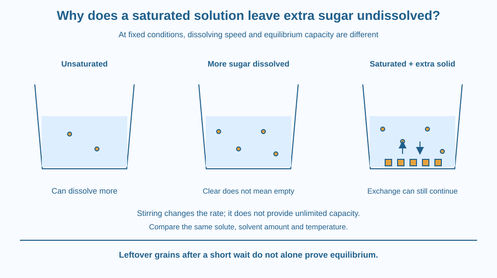

Explain why stirring does not always make all added sugar dissolve. Define a saturated solution at a stated temperature. Separate the rate of dissolving from the amount that can remain dissolved at equilibrium, and interpret leftover solid without jumping to conclusions.
You add sugar to a cup of water and stir. The first spoonful disappears from sight. Another does too. After more additions, some grains remain at the bottom even after patient stirring.
Did the water become tired? Did the spoon stop working? Neither explanation is useful. A given amount of water under specified conditions has a limited capacity to keep sugar dissolved. Before reaching that conclusion, however, you must distinguish a true limit from sugar that simply has not had enough time to dissolve.
In a sugar solution, water is the solvent and sugar is the solute. Dissolved sugar is dispersed through the liquid at a scale too small to see as individual grains. Its disappearance from view does not mean it has stopped being present.
An unsaturated solution can dissolve more of the same solute under the stated conditions. A saturated solution has reached the equilibrium limit for that solute in that amount of solvent at that temperature. Extra solid can then remain alongside the solution.
The word temperature is essential. Solubility is not simply one capacity that applies to every situation. For ordinary table sugar in water, the amount that can dissolve changes with temperature. The solute, solvent and their amounts also matter.
The rate of dissolving is a different question. Stirring brings fresh liquid into contact with sugar surfaces and carries dissolved material away from those surfaces. Crushing a lump can increase exposed surface area. These changes can make dissolving faster without necessarily changing the final equilibrium capacity at the same temperature.
Imagine two equal cups containing the same amounts of water and sugar. One is stirred and one left still. Their early appearances may differ. If both eventually reach the same temperature and equilibrium, stirring alone does not give one cup an unlimited capacity for sugar.
At saturation with solid present, particles can continue leaving and joining the solid surface. At equilibrium, the opposing processes balance on average. The visible amount of solid need not change even though microscopic exchange continues. “No visible change” does not require every particle to stop moving.
Leftover solid is evidence to interpret, not an instant proof. A large sugar lump may remain simply because dissolution is slow. A cold spot, a different substance or inadequate mixing can also complicate the observation. A sound saturation claim states the temperature and allows sufficient time.
This lesson stops at the limit on what remains dissolved. The earlier crystal lesson asked how an ordered solid grows as water is removed. Related vocabulary does not make those questions identical: here the main comparison is capacity versus speed, with the solvent amount kept fixed.
Imagine a waiting room with a limited number of available spaces. Opening another doorway can help people enter faster, but it does not create extra spaces inside. This separates entry rate from final capacity.
The doorway stands for how efficiently fresh solvent reaches sugar surfaces. The room's capacity stands for an equilibrium solubility limit at a specified temperature. The analogy is imperfect because dissolved particles interact continuously rather than sitting in assigned seats.
Draw two labels beside a cup: “How fast?” and “How much at equilibrium?” Place stirring under the first. Place solvent amount and temperature under the second, remembering that temperature can influence both questions.
The SVG shows three equal water samples at the same stated temperature. One has dissolved a small addition, the next has more dissolved sugar, and the last has excess solid beneath a saturated solution.
A separate pair compares stirring with still water. It is labelled as a rate comparison, not a promise of different final capacities. The liquid's colour is symbolic: a real sugar solution can remain clear as its concentration increases.
A two-way arrow at the solid surface represents continuing exchange at equilibrium. It does not suggest that the grains must be visibly bouncing between the liquid and the bottom.

Making a sweet drink or syrup involves both concentration and preparation time. Stirring a cup may help sugar dissolve sooner, but it cannot make a fixed quantity of water accept unlimited sugar at one temperature.
Indian sweets use carefully controlled mixtures, and changing temperature can alter how much sugar remains dissolved. Recipes therefore depend on conditions rather than the vague instruction to keep adding sugar until it disappears. This lesson does not require cooking syrup or handling hot mixtures.
A spoonful is also an imprecise measure of mass. Different spoon sizes and how tightly sugar is packed can change the amount added. A home trial should avoid presenting its spoon count as a universal solubility value.
Use room-temperature water, sugar, a spoon and a small clear cup. Do not heat the mixture. Ask an adult before using kitchen ingredients and do not drink the experimental sample.
Five minutes may not be enough to demonstrate equilibrium. Report what happened within the available time, rather than automatically calling every leftover grain proof of saturation. The exercise distinguishes observation from a stronger scientific claim.
Suppose two students use the same water volume, temperature and sugar mass. One reports that stirring increased solubility because the sugar disappeared sooner. What did the student actually measure?
Suggest how a longer comparison could distinguish faster dissolving from a different final dissolved amount. State why allowing temperature to change between the cups would weaken that comparison.
What does saturated mean at a stated temperature?
Answer: A — A saturated solution has reached the equilibrium solubility limit under those conditions.
Why can stirring make sugar disappear sooner?
Answer: B — Stirring improves contact and transport near the dissolving surfaces.
Sugar remains after ten seconds. What is the soundest conclusion?
Answer: C — A brief observation of solid does not distinguish slow dissolution from an equilibrium limit.
Prepare an instruction card headed “Speed is not capacity.” Use a stirred cup and an unstirred cup to explain the distinction. Specify the quantities and temperature that should be matched.
Include an honest result statement for a five-minute trial: for example, visible grains remained after a stated time. Then explain what extra evidence is needed before replacing that observation with the claim that an equilibrium saturation limit was reached.
A saturated solution beside solid sugar can be active at the microscopic scale while looking unchanged. Equal average rates of leaving and rejoining the solid keep the visible amount steady. Equilibrium describes a balance of processes, not necessarily the absence of processes.
Stirring can speed dissolving, but saturation limits how much sugar remains dissolved in a given amount of water at a stated temperature.